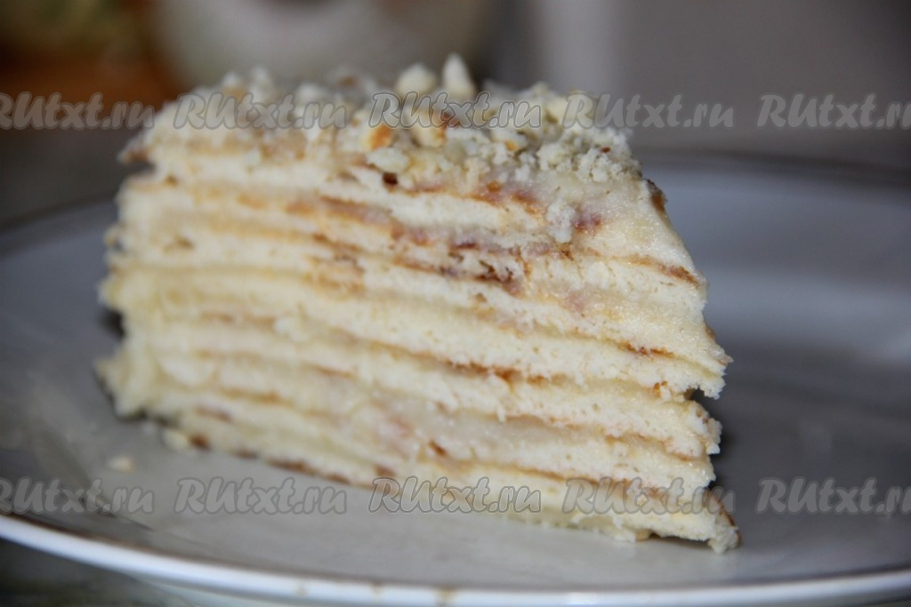

Торт "Минутка"

Сладкое любят многие. А вот печь что-либо в духовке решаются далеко не все. Торт "Минутка" - идеальный вариант для
тех, кто не имеет духовки или не хочет её использовать. Это лакомство лучше готовить вечером, чтобы тортик хорошо
пропитался за ночь. На приготовление этого блюда у меня ушло всего 40 минут.
Ингредиенты
Для приготовления торта Вам потребуется:
Для коржей:
- 3 ст. муки;
- 1 банка сгущенки;
- 1 яйцо;
- 1 ч. л. соды (погасить уксусом).
Для крема:
- 750 г молока;
- 200 г сливочного масла;
- 1.5 ст. сахара;
- 2 яйца;
- 3-4 ст. л. муки
- 1 пакетик ванилина.
Этапы приготовления
-
Делаем тесто для торта, смешивая все ингредиенты (мука, сгущенное молоко, яйцо, сода). Тесто делим на 8
кусков.
- Раскатываем один кусочек диаметром больше сковороды и выкладываем на разогретую сковородку.
- Через минуту переворачиваем (коржи жарятся очень быстро).
- Снятый корж обрезаем (обрезки потом пойдут на посыпку торта).
-
Смешиваем все компоненты для крема, кроме масла, и ставим на огонь до загустения, при этом интенсивно
помешивая.
В конце добавляем в горячий крем сливочное масло.
- Коржи смазываем теплым кремом, верх и бока посыпаем измельченными крошками.
- Оставляем торт на несколько часов, чтобы он хорошо пропитался.
Торт "Минутка" украсит любое чаепитие. Приятного аппетита!
Наверх
На главную